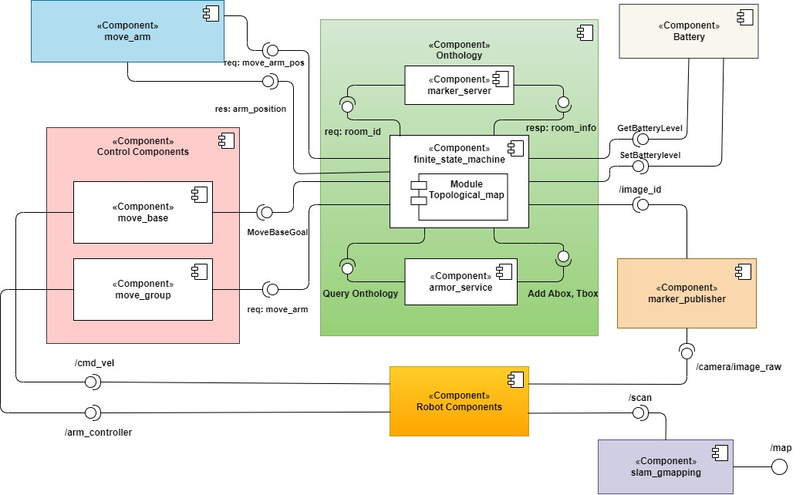

Welcome to EXPROB_Assignment_02’s documentation!
Introduction
This package is an experiment to use a topological map ontology for controling a robot using ROS. The ontology consists of an indoor environment with multiple rooms and a mobile robot.
{kind=link}
The robot starts in room E and by scanning the provided markers, it receives the information to build the semantic map, i.e., the name and center position of each room and the connections between them.
Once the semantic map is built, robot has to start moving among the rooms with the policy that each room that has not been visited for a long time, would be selected as the target room. Everytime the robot gets to the target room, it has to scan the room environment as it did for the first time with the markers.
When the robot battery is low, it goes to the charger which is placed in room E, sand wait for some times before to start again with the above behavior.
Indices and tables
This is the documentation of the EXPROB_Assignment_02 package!
Robot State Module
This node implements an robot_states
- Service:
‘robot-state’ ‘state/get_pose’ ‘state/get_battery_level’ ‘state/set_battery_level’
Finite State Machine Module
This node implements State Mmachine
This script handles the main behavior of a robot by using a finite state machine. It waits for the ontology (map) to be built, and then enters a loop that transitions between three states: move_in_corridor, visitroom, and charging.
In the move_in_corridor state, the robot moves randomly in the corridors and waits for a certain amount of time if the battery is not low and there are no urgent rooms to visit. If the battery is low, the robot transitions to the charging state, in which it stays in room E until the battery is charged. If there is an urgent room to visit while the battery is charged, the robot transitions to the visitroom state and stays there for a certain amount of time.
- class scripts.state_machine.Battery_Low[source]
Defines the state when robot has reached the charger and chargers battery after some time using
set_battery_level(battery_level)function and then returnschargedtransition.
- scripts.state_machine.findindividual(list)[source]
Function for finding the individual in a list from the return of a qureied proprity from armor. :param Individual: The individual in the armor resonse format ex. [‘<http://bnc/exp-rob-lab/2022-23#R1>’] :type Individual: list
- Returns
The individual extarcted and changed to a string ex. “R1”
- Return type
Individual(string)
- scripts.state_machine.get_room_info(room_id)[source]
Server client for
marker_server, gets information for each room usingroom_infoservice :param room_id: :type room_id: int- Returns
resp(RoomInformationResponse)
- scripts.state_machine.get_room_pose(room)[source]
Detects the center postion by using the room information for corresponding room :param room: :type room: string
- Returns
room_pose(Point)
- scripts.state_machine.main()[source]
The main function for finite_state_machine node, initialises the node defines the subscriner to the
/image_idtopic , defines the states and transitions of the finite state machine for topological map and finally starts the finite state machine process
- scripts.state_machine.marker_id_callback(data)[source]
Callback function for
/image_idtopic subscriber. Eveytime an image id is detected, checks if image id is valuable and not already available, then saves the corresponding information of each room in the global variables by callingget_room_info(room_id)function, and modifies the ontology usingadd_room(room),add_door(door),assign_doors_to_room(room, doors)disjoint_individuals()andadd_last_visit_time(room, visit_time)functions fromtopological_map.pyhelper script. :param data: :type data: int32